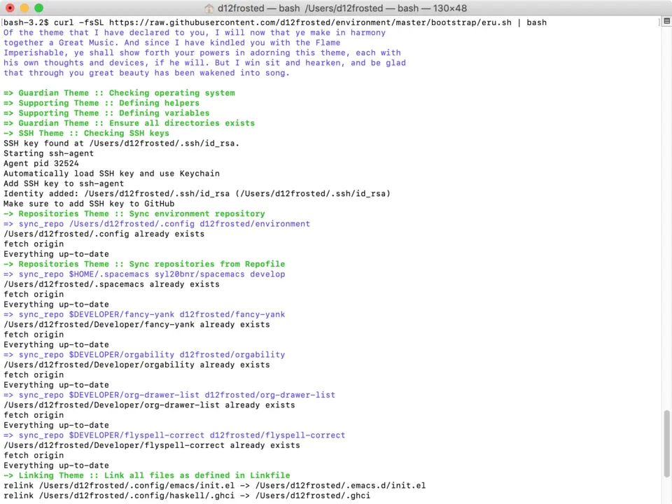
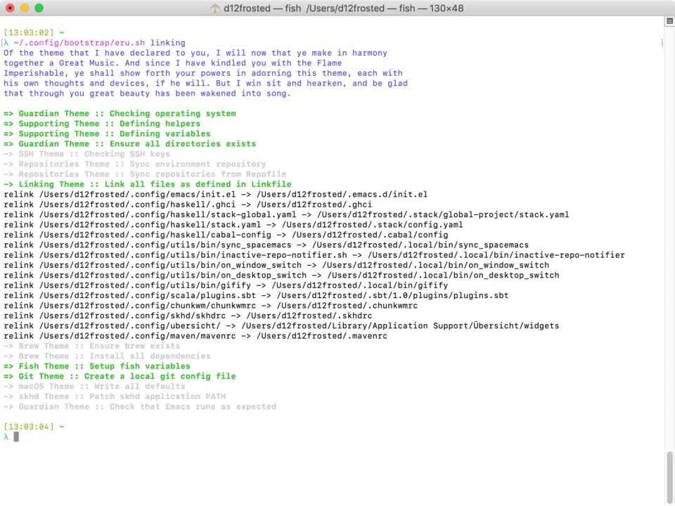

Revisiting Eru
As you might know, Eru is the supreme deity of Arda. The first things that Eru created where the Ainur. He then bade the Ainur to sing to him. Each Ainu had a particular theme given by Eru. Sure enough, Eru makes the ‘World and All That Is’.
So when I get a new clean system there is nothing yet. And so I call upon the wisdom and power of Eru.sh - the one who creates Ainur and the ‘World and All That Is’.
$ curl https://raw.githubusercontent.com/d12frosted/environment/master/bootstrap/eru.sh | bashI just have to wait patiently, while everything is being downloaded and installed, while all configuration cogs are being placed on the right spot.

The good thing about Eru.sh is that after the ‘World and All That Is’ creation you can still call upon his help and you can even ask him to help with specific theme or themes only.
$ ./bootstrap/eru.sh # to help with all themes
$ ./bootstrap/eru.sh repositories # to help with repositories
$ ./bootstrap/eru.sh repositories brew # to help with repositories and brewEru.sh reveals all available themes. For example,
=> Guardian Theme :: Checking operating system
=> Supporting Theme :: Defining helpers
=> Supporting Theme :: Defining variables
=> Guardian Theme :: Ensure all directories exists
-> SSH Theme :: Checking SSH keys
-> Repositories Theme :: Sync environment repository
-> Repositories Theme :: Sync repositories from Repofile
-> Linking Theme :: Link all files as defined in Linkfile
Every theme that begins with => is a mandatory theme - the one you can’t skip. Every theme prefixed with -> is an optional one. If you don’t specify any themes, all optional themes are sung. If you do specify at leas t one theme - only specified are sang.

You can find the latest version of Eru.sh on GitHub.
Interesting stuff
Mythology is great, but let’s check what’s cool about Eru.sh.
- It installs and updates a lot of applications and utilities that I use on a daily basis.
- It installs my configurations for these applications. The most important ones are
Emacs,fish,skhd,chunkwm. Plus it tries to set up different parts of macOS for my liking. - It works in an incremental fashion. In general, it installs only what is missing. So in case when my environment is up to date,
Eru.shis almost instant. - It allows you to setup only specific parts. For example, you can only install dependencies or sync mandatory repositories. Or do both.
This means, that on a fresh system I can easily get my environment just by running one command and waiting for a long time. But in a working environment, I can easily get the latest version of it. This comes in handy since I use more than one computer.
Bash magic
Eru.sh is written in bash because it must work on systems without Haskell preinstalled. Features of bash4 are not used, because of the same reasons, it is not available on a clean macOS.
Eru.sh is mostly a boring bash script. But there are several points that I find interesting myself.
Mapping files
There are themes that perform the same action over a set of arguments. In order to avoid noise in Eru.sh these arguments are stored in external files (rule files). For example, repositories theme synchronises repositories by rules specified in the Repofile, which looks like the following.
$HOME/.spacemacs syl20bnr/spacemacs develop
$DEVELOPER/fancy-yank d12frosted/fancy-yank
$DEVELOPER/orgability d12frosted/orgability
$DEVELOPER/org-drawer-list d12frosted/org-drawer-list
$DEVELOPER/flyspell-correct d12frosted/flyspell-correct
Every line specifies a rule - target location of the repository, remote repository URL (fir GitHub one case specify only owner/repo instead of a full HTTPS/SSH URL) and branch to use.
There is also a function that gets these value as arguments and does all the job. In the case of repositories theme, the function is called sync_repo.
One can easily write a script reading a given file line by line and passing them to a function. For example,
while IFS='' read -r line || [[ -n "$line" ]]; do
sync_repo $line
done < "Repofile"Please note that $line should not be put in parenthesis otherwise whole line will be passed as a first argument, but we want to split it into multiple arguments by a space.
While this works, it doesn’t scale, requires repetition and decreases the level of code readability. Let’s abstract it a little bit by extracting the logic of reading the lines and passing them to a function.
function map_lines() {
while IFS='' read -r line || [[ -n "$line" ]]; do
$1 $line
done < "$2"
}
map_lines sync_repo "Repofile"Now it looks like a Functor for a file. No repetition, it does scale well and we know exactly what is the purpose of map_lines sync_repo "RepoFile".
Dealing with multiple optional themes
So in Eru.sh, we have multiple optional themes. The easiest way to deal with them is to create a separate variable for every theme and then use it to check if we should run an action for a given theme.
ALL="true"
REPOSITORIES="false"
LINKING="false"
BREW="false"
POSITIONAL=()
while [[ $# -gt 0 ]]
do
key="$1"
case $key in
repo)
ALL="false"
REPOSITORIES="true"
shift # past argument
;;
link)
ALL="false"
LINKING="true"
shift # past argument
;;
brew)
ALL="false"
BREW="true"
shift # past argument
;;
*) # unknown option
POSITIONAL+=("$1") # save it in an array for later
shift # past argument
;;
esac
done
set -- "${POSITIONAL[@]}" # restore positional parameters
if [[ "$ALL" = "true" || "$REPOSITORIES" = "true" ]]; then
optional_theme "Repositories" # logging
map_lines sync_repo "$target/bootstrap/Repofile"
else
inactive_theme "Repositories" # logging
fi
if [[ "$ALL" = "true" || "$LINKING" = "true" ]]; then
optional_theme "Linking" # logging
map_lines safe_link "$target/bootstrap/Linkfile"
else
inactive_theme "Linking" # logging
fi
if [[ "$ALL" = "true" || "$BREW" = "true" ]]; then
optional_theme "Brew" # logging
cd "$target/bootstrap" && brew bundle
else
inactive_theme "Brew" # logging
fiBut this gets nasty every time a new theme is added (though it happens rarely). And most importantly, it looks so redundant, so repetitive that I almost fall asleep while writing it.
We can improve it a little bit. Let’s focus on the part where we check for a variable value.
function theme_guard() {
if [[ "$ALL" = "true" || "$1" = "true" ]]; then
optional_theme "$2" # logging
return 0
else
inactive_theme "$2" # logging
return 1
fi
}
theme_guard "$REPOSITORIES" "Repositores" && {
map_lines sync_repo "$target/bootstrap/Repofile"
}
theme_guard "$LINKING" "Linking" && {
map_lines safe_link "$target/bootstrap/Linkfile"
}
theme_guard "$BREW" "Brew" && {
cd "$target/bootstrap" && brew bundle
}So we moved out all the checks and logging to a helper function. It is already good enough as an improvement, but we can do even better.
Bash provides an ability to evaluate arbitrary code by using eval. Please note though, that eval is a bane of shell programming and should be avoided like leprosy. In general, it’s okayish to use eval when you fully control what is passed to it. If you pass user input to eval then you have a problem, because now you need to deal with code injection.
We can use eval to get the value of a variable by a string.
$ CUSTOM_VAR=42
$ echo '$CUSTOM_VAR'
$CUSTOM_VAR
$ eval echo '$CUSTOM_VAR'
42While this is good enough, it’s possible to avoid eval in this particular case, when we just want to get the value of variable by name.
$ CUSTOM_VAR=42
$ echo '$CUSTOM_VAR'
$CUSTOM_VAR
$ CUSTOM_VAR_REF=CUSTOM_VAR
$ echo ${!CUSTOM_VAR_REF}
42
Though if you want to expand variables in arbitrary string (like, $HOME/config.json), you’ll have to use eval.
Right now we are passing two arguments to theme_guard: a guarding variable value and the name of a theme. But the code looks similar - the first one is prefixed with the $ sign and is in uppercase, while the second one is in capital case. In order to deal with case, we can use awk.
function theme_guard() {
key=$(echo "$1" | awk '{print toupper($0)}')
local guard_ref="guard_$key"
guard="${!guard_ref}"
if [[ "$ALL" = "true" || "$guard" = "true" ]]; then
optional_theme "$1" # logging
return 0
else
inactive_theme "$1" # logging
return 1
fi
}
theme_guard "Repositores" && {
map_lines sync_repo "$target/bootstrap/Repofile"
}
theme_guard "Linking" && {
map_lines safe_link "$target/bootstrap/Linkfile"
}
theme_guard "Brew" && {
cd "$target/bootstrap" && brew bundle
}We got a very small improvement - we just don’t need to pass the theme name to the theme_guard twice. But I find it satisfying anyway. Also, it will come handy a little bit later.
Now let’s go back to the variable declaration. It turns out that we can use eval to declare variables as well.
$ eval 'MEANING=42'
$ eval echo '$MEANING'
42But defining variables based on the user input is dangerous. Fortunately, there is a declare program designed just for this task. Moreover, it allows declaring read-only variables.
$ declare "CUSTOM_VAR=42"
$ echo $CUSTOM_VAR
42
$ CUSTOM_VAR=12
$ echo $CUSTOM_VAR
12
$ declare -r "CUSTOM_VAL=42"
$ echo $CUSTOM_VAL
42
$ CUSTOM_VAL=12
bash: CUSTOM_VAL: readonly variableSo let’s use this declare for our good.
ALL="true"
POSITIONAL=()
while [[ $# -gt 0 ]]
do
if [[ "$1" != "" ]]; then
key=$(echo "$1" | awk '{print toupper($0)}')
declare -r "$key=true"
ALL="false"
fi
shift
done
set -- "${POSITIONAL[@]}" # restore positional parametersWhile this becomes a little bit harder to understand it saves us a lot of repetition. The only thing I would improve here immediately is to add a unique prefix to variable names, so user does not interfere with other variables. The final version looks like it.
ALL="true"
POSITIONAL=()
while [[ $# -gt 0 ]]
do
if [[ "$1" != "" ]]; then
key=$(echo "$1" | awk '{print tolower($0)}')
declare -r "guard_$key=true"
ALL="false"
fi
shift
done
set -- "${POSITIONAL[@]}" # restore positional parameters
function theme_guard() {
key=$(echo "$1" | awk '{print tolower($0)}')
local guard_ref="guard_$key"
guard="${!guard_ref}"
if [[ "$ALL" = "true" || "$guard" = "true" ]]; then
optional_theme "$1" # logging
return 0
else
inactive_theme "$1" # logging
return 1
fi
}
theme_guard "Repositores" && {
map_lines sync_repo "$target/bootstrap/Repofile"
}
theme_guard "Linking" && {
map_lines safe_link "$target/bootstrap/Linkfile"
}
theme_guard "Brew" && {
cd "$target/bootstrap" && brew bundle
}Just by extracting checks into separate function, by using declare to define variables and variable indirection to read value of variables we highly improved initial code. Less redundancy, clearer intention and ability to scale in terms of themes.
Epilogue
Fortunately, our actions didn’t lead to Saruman taking control over the Shire, so we are good. This post is already long enough, so I am going to finish here. If you have any questions, just email me.